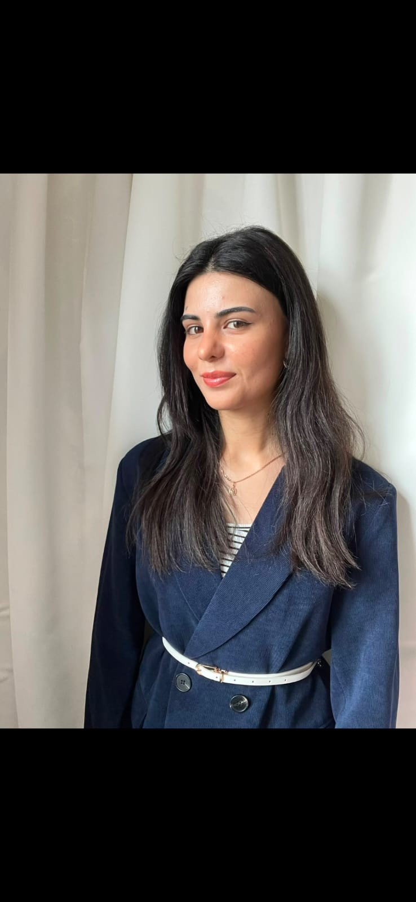
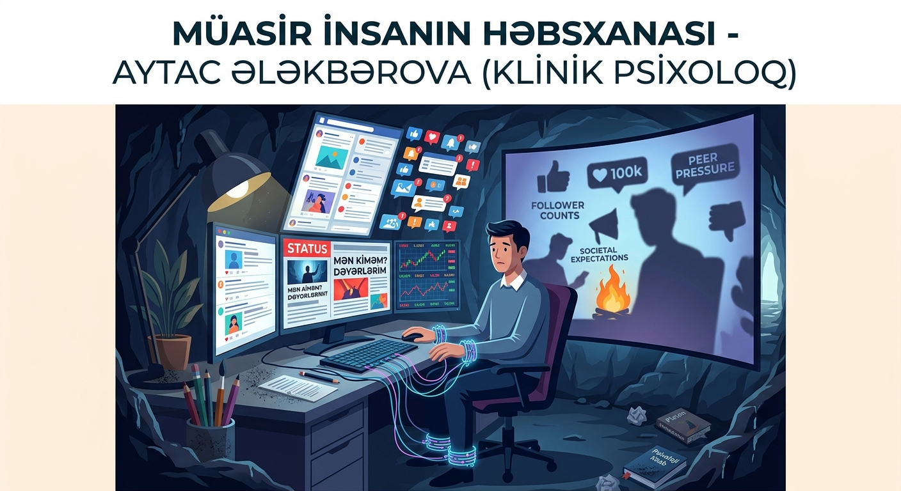
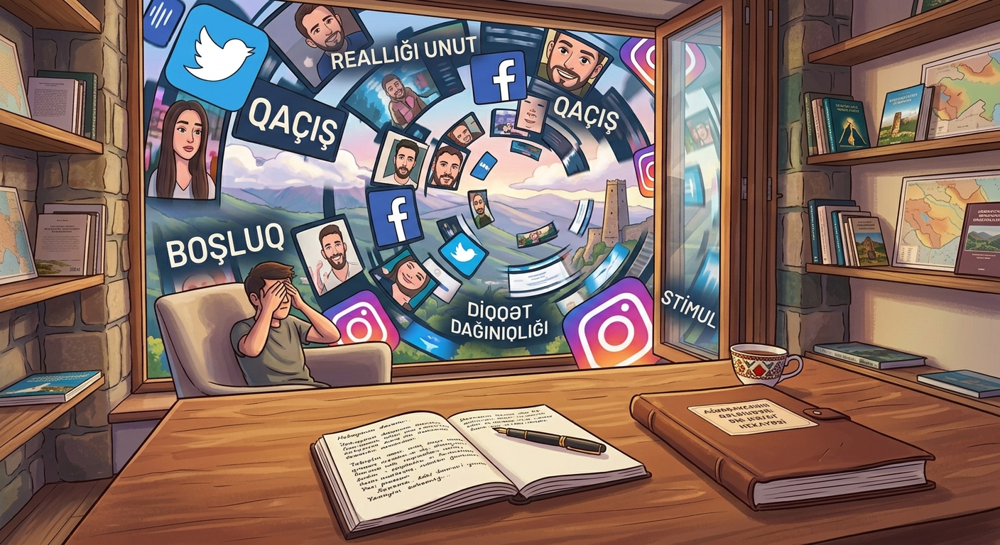
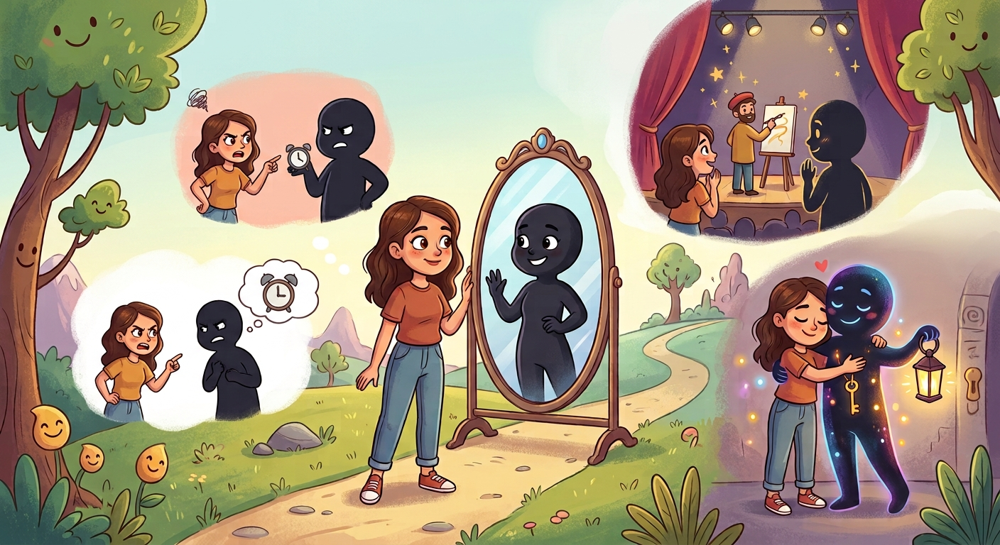

Müasir insanın həbsxanası
Müasir insanın görünməyən zəncirləri, cəmiyyətin təsiri və insanın özünü kəşf etməsi haqqında düşüncələr.
Məqaləni oxu →Psixoloji çətinliklərinizi anlamaq, emosiyalarınızı daha sağlam idarə etmək və həyatınızda daha balanslı münasibətlər qurmaq üçün peşəkar psixoloji dəstək.

Mən Aytac Ələkbərova, klinik psixoloqam. Psixoloji konsultasiya prosesində əsas məqsədim müraciət edən şəxsin yaşadığı çətinlikləri mühakiməsiz və təhlükəsiz bir mühitdə anlamaqdır.
Hər insanın həyat hekayəsi və ehtiyacları fərqlidir. Buna görə terapiya prosesində fərdi xüsusiyyətləri və müraciətin məqsədini nəzərə alan yanaşmadan istifadə edirəm.
Böyüklər, yeniyetmələr və cütlüklərlə işləyirəm. Seanslar həm onlayn, həm də canlı formatda keçirilə bilər.
Fərqli yaş və həyat mərhələlərində qarşılaşdığınız psixoloji çətinliklər üzərində birlikdə işləyə bilərik.
Anksiyete, stress, özünəinam, münasibətlər, emosional çətinliklər, tükənmişlik və digər psixoloji mövzularla bağlı fərdi konsultasiya.
Müraciət et →Yeniyetməlik dövründə özünüdərk, emosional dəyişikliklər, sosial münasibətlər, ailə və məktəb ilə bağlı çətinliklər.
Müraciət et →Ünsiyyət problemləri, konfliktlər, emosional uzaqlaşma və münasibətlərdə qarşılıqlı anlaşılmazlıqlar üzərində cütlük seansları.
Müraciət et →Psixoloji konsultasiya zamanı əsas məqsəd problemin özünü deyil, onun sizin həyatınızdakı təsirini anlamaq və daha sağlam həll yolları üzərində işləməkdir.
Terapiya yanaşması müraciətçinin ehtiyaclarına, məqsədlərinə və problemin xüsusiyyətlərinə uyğun şəkildə müəyyənləşdirilir.
Düşüncələr, emosiyalar və davranışlar arasındakı əlaqəni araşdırmağa və faydasız düşüncə-davranış nümunələrini dəyişdirməyə yönəlmiş yanaşmadır.
Keçmiş təcrübələrin, xüsusilə erkən dövrdə formalaşan sxemlərin bugünkü düşüncə, hiss və münasibətlərə təsirini anlamağa kömək edir.
Emosiyaları tanımaq, onların mesajını anlamaq və daha sağlam şəkildə ifadə etmək üzərində işləməyə imkan verir.
İndiki ana diqqət yetirmək, düşüncə və emosiyaları müşahidə etmək və onlarla daha sağlam münasibət qurmaq üçün istifadə olunur.
Gündəlik həyatda qarşılaşdığımız psixoloji mövzular haqqında faydalı və maarifləndirici yazılar.

Müasir insanın görünməyən zəncirləri, cəmiyyətin təsiri və insanın özünü kəşf etməsi haqqında düşüncələr.
Məqaləni oxu →
İnsan niyə boş qalmaqdan qorxur və özünü müxtəlif stimullarla məşğul etməyə çalışır?
Məqaləni oxu →
Başqalarında bizi qıcıqlandıran xüsusiyyətlərin özümüz haqqında nə deyə biləcəyini araşdıran yazı.
< Məqaləni oxu → >Konsultasiya ilə bağlı müraciətinizi form vasitəsilə göndərə bilərsiniz. Müraciətinizə uyğun olaraq sizinlə əlaqə saxlanılacaq.